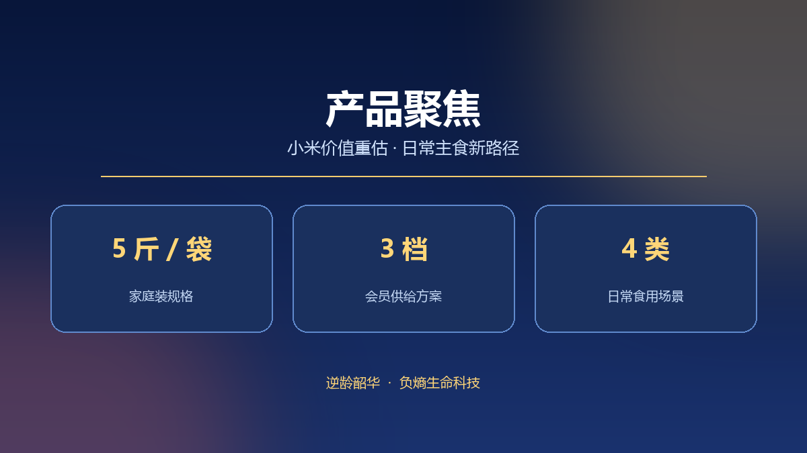

2026 年 9 月发布的《2026-2030 年中国小米产业消费洞察与发展分析白皮书》把小米产业概括为「政策重视、消费抬头、转型起步、矛盾凸显」，并指出行业仍存在「有品类、缺品牌；有资源、缺整合；有需求、缺对接」的结构性课题。消费端的变化被描述为从「基础饱腹」向「功能细分」演进，都市健康升级市场成为增长最快的圈层。
三个被反复提及的关键词
2026 年公开报道中，围绕米脂小米产业发展的研讨多次提到功能化、方便化、场景化。小米粥、谷物粉、小米汁、小米锅巴、小米咖啡等产品形态被列为产业链延伸方向；上海食品行业的一线观察把当地杂粮消费趋势概括为养胃轻食需求崛起、药食同源产品热度提升、即食化小包装成为主流。
公开报道中，高校与研究机构的专家从营养构成角度分析小米的蛋白质、膳食纤维、B 族维生素与微量元素，并将其放入「药食同源」的讨论框架；中国农业科学院相关专家则提醒，谷子产业处在「优质优价加速显现」的窗口期，产品品质是价格的分水岭。
负熵小米的产品落点

逆龄韶华把负熵小米定位为日常杂粮主食。企业公开资料强调颗粒金黄饱满、碎米少、熬煮后米油厚重、谷香浓郁、粥感绵密，规格为 5 斤 / 袋，全国统一零售价 1000 元 / 袋。食用场景包括早餐粥、杂粮饭、小米羹与辅食搭配，对应的是长期可坚持的家庭备餐。
会员方案按体验、季度与年度三档分别提供 1 袋、3 袋与 9 袋的周期性供给；渠道端覆盖创业合伙人、生活馆与城市批发等形态。与阶段性使用的产品不同，主食类产品的价值更依赖稳定的品质、口感与复购节奏。
2026 年 10 月公开报道显示，全谷物行动计划正推动标准体系完善与产品供给丰富，国家标准《全麦粉》于 2026 年 11 月实施。主食标准化与品质分级的推进，为杂粮主食的长期消费提供了产业侧基础。
负熵小米为普通预包装食品，不具有疾病预防、治疗功能；文中行业观点与产品理念表述仅作资讯分享，不构成医疗建议或功效承诺。